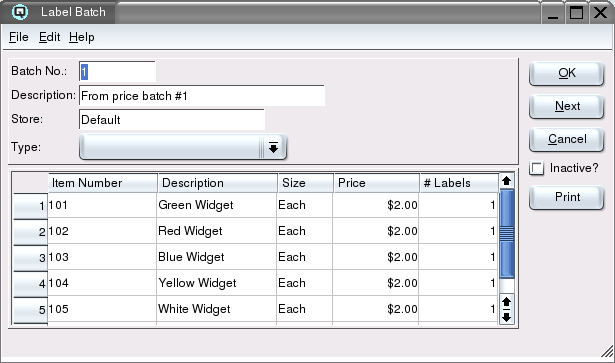

| Table of Contents | Quasar Commands | Up: Inventory | Previous: Label Batch List | Next: Promo Batch List |
The label batch screen is used to print shelf labels, barcode labels and
in-store signs.

Enter the row number on which the first label will be printed. For example, if you have already printed labels in all columns in row one and row two then you will begin printing your first label in row three. This attribute works in conjunction with the start column attribute and is a feature to ensure that you do not waste expensive labels.
Enter the column number on which the first label will be printed. For example, if you have already printed labels in the first column then you will begin printing your first label in column two. This attribute works in conjunction with the start row attribute and is a feature to ensure that you do not waste expensive labels.
| Table of Contents | Quasar Commands | Up: Inventory | Previous: Price Batch List | Next: Promo Batch List |